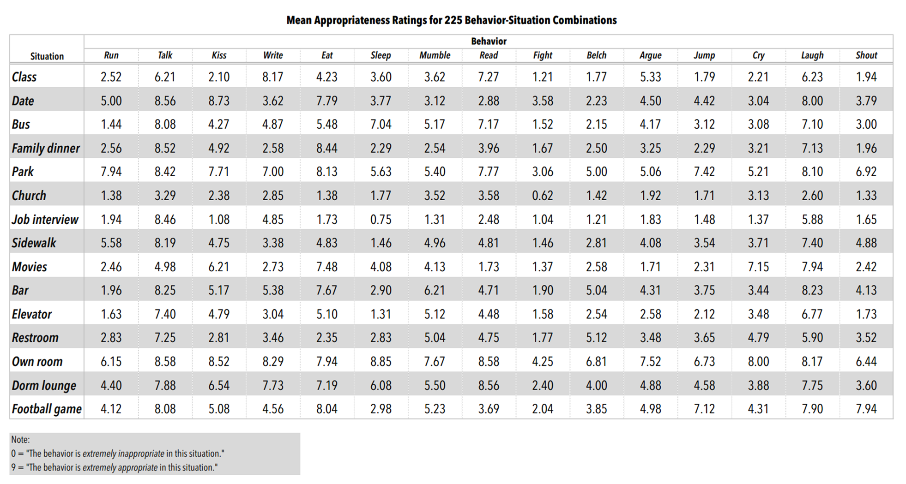
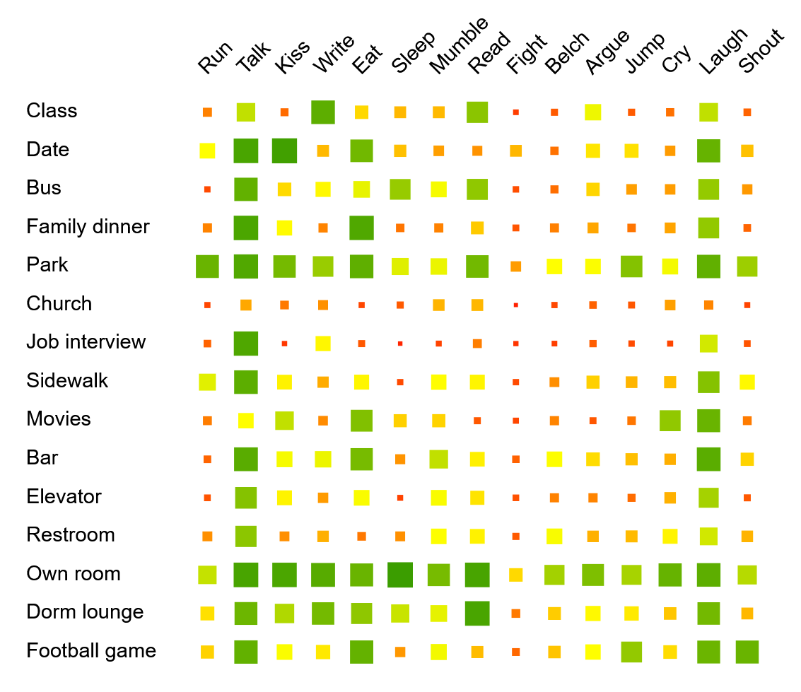

You are viewing the archivable, non-interactive version of the document. To run the main interactive version, please visit: https://github.com/vis-uni-bamberg/mv-vis
This tutorial is an introduction to data visualization that focuses on the explorative analysis of multivariate (tabular) data and uses interactive examples in R. The tutorial is target at learners of all disciplines—no programming experience required.
The goal of data visualization is to make data readable. Whereas statistics focuses on summarizing data and testing hypothesis, visualization is more explorative. With a visualization, we can get an overview of the data, identify frequent patterns and rare outliers, inspect quality issues, and relate individual data points to the overall data. This is not meant to replace a statistic analysis, but to complement it.
In this tutorial, we focus on multivariate data—data that can be represented as tables—because it is one of the most common data types and its visualization is relevant across nearly all scientific areas and domains. The rows of the table usually list the data items, while the columns provide different data variables recorded for each item.
Tables in their plain version are a great tool to show small amounts of data, as well as to edit and transform the data. However, they hardly provide a good overview or reveal patterns and outliers.
For instance, the table below shows study results where participants answered how appropriate a behavior is in a certain situation (from 0 – low to 9 – high appropriateness). It is easy to read a specific value from the table relating to a pair of behavior and situation. An example is that sleeping in church is not considered appropriate (value: 1.77). But what is the most appropriate behavior in church? What is generally a favorable behavior in most situations? Are there other situations rated similarly to church? These questions are harder to answer with the plain table, already in rather small example like this.

By using colored squares as cells, we can transform the table into a visualization. We use orange for low values and green for high values. Additionally, we vary the sizes of the squares according to the appropriateness to make it even easier to read, also considering that some users might be red-green blind. This is a straightforward way to visualize multivariate data, but a quite powerful approach already. For instance, we can now see that job interview has very similar values as church, but park and own room are rather the opposite.

This is just one example to motivate that the use of visualization can be a powerful tool for data analysis. There are also other visualization methods for such tabular data, some that scale to much larger datasets. We will explain some important ones in this tutorial step by step.
As the main content of this tutorial, we will introduce you to multivariate data and how to visualize such information. After clarifying the type of data (Multivariate Data), we will first look at visualizations that visualize the data from each variable separately (Univariate Analysis). Then, we also discuss visualization that show multiple variables at the same time (Multivariate Analysis). Along introducing the visualization techniques, we will also discuss their advantages and limitations, as well as their potential to be misinterpreted or misused.
Using R, we will give practical examples how to create these visualization with a few lines of code. We include short interactive quizzes to immediately allow you to check whether you understood the discussed content and can use the visualization to get insights.
Before presenting and discussing different visualization options, we first explain what exactly we consider as multivariate data. We also introduce a specific dataset that we use as our running example throughout this tutorial.
Multivariate data, as focused in this tutorial, concerns any data that can be represented as:
Since all items of one dataset are described along the same variables, it is important that the items belong to the same class of objects. Otherwise, it would be hard to apply the same variables. For instance, mixing persons with countries in one dataset, it would be hard to find any attributes that apply to both classes of items alike.
Aside identifiers and names, we can discern between two main data types for those variables:
Hence, these two types encode quantitative and qualitative information. While numeric variables can be sorted in increasing or decreasing order, categorical variables often cannot. Please note that, sometimes, categorical variables are encoded as numbers (e.g., a numeric country code)—analyzing them as numeric variables would result in invalid results.
We have selected a dataset that is easy to understand, yet of high relevance to many disciplines. It lists the countries of the world as data items and characterizes them along social and economic properties in 2010 as variables. The data is based on free material from GAPMINDER.ORG, CC-BY LICENSE.
Let us load our dataset with R and display it as a table. We import it from a csv file, a simple file format for tables that consists of of comma-separated values, including also the table header in the first line of the file. In order to see the top 5 rows, we use the function head().
world <- read.csv("https://git.uni-due.de/spdeartj/data-campus/-/raw/master/data/world_dataset.csv", header=TRUE)
head(world)## country region population income health_expenditure
## 1 Afghanistan Asia 29200000 1960 37.7
## 2 Albania Europe 2950000 10800 241.0
## 3 Algeria Africa 36000000 11000 178.0
## 4 Andorra Europe 84500 43600 3100.0
## 5 Angola Africa 23400000 7690 123.0
## 6 Antigua and Barbuda Americas 88000 18200 690.0
## life_expectancy babies_per_woman
## 1 59.9 5.82
## 2 77.6 1.65
## 3 76.3 2.89
## 4 82.3 NA
## 5 59.9 6.16
## 6 76.6 2.13The dataset contains mostly numeric variables, but also a column with an identifier (the country name) and one with a categorical variable (the region). In detail, we have included the following variables:
country (identifier) – the name of the countryregion (categorical) – the geographic region the
country is locatedpopulation (numeric) – the number of inhabitants of a
countryincome (numeric) – the gross domestic product (i.e.,
the average economic production) per citizen in international
dollarshealth_expenditure (numeric) – the average health
spending per citizen in USDlife_expectancy (numeric) – the expected number of
years a newborn child would live under current conditionsbabies_per_woman (numeric) – the fertility rate, which
is number of babies that would be born per woman under current
conditionsYou can also observe some missing values (NA – not
available). It is a common problem in all real world data that, due
to different reasons, there are gaps and quality issues in the data. We
intentionally kept the countries with such missing data to literally
draw a more realistic picture of the data. Please note, however, that
the R scripts in the following often produce warnings relating to these
missing values. But these are good reminders that, when interpreting the
visualizations, we need to be careful as not all data items might be
present.
Every variable describes a relevant attribute of the data items. Hence, analyzing the data along only one variable at first (univariate analysis), might already provide relevant insights. For instance, we could learn how the items are distributed across a numeric scale (e.g., with a peak around a certain value or evenly across all possible values) or discover noteworthy outliers and extreme values. We will present some simple, yet powerful visualizations to explore such characteristics.
A set of numeric values can be generally represented as bar charts. This type of diagram is also applicable here and provides maybe the simplest visualization of a single variable. In such a diagram, each data item is represented by a bar and the height of the bar encodes the respective numeric value.
We can test this, for instance, for the variable
life_expectancy using the following code. (Please click
Run Code to see the diagram.)
library(ggplot2)
ggplot(head(world), aes(x = country, y = life_expectancy)) +
geom_col()The code starts with importing the program library ggplot2, a popular
visualization library for R. Then, we can generate a bar chart using the
function ggplot() with geom_bar(). First, we
provide the data (here, head(world)—only the first five
rows to not overload the diagram) and specify the
aesthetic mapping (here, the mapping of the
data to x- and y-axis). Second, we define a
geometric layer as bars or
columns, respectively
(geom_col).
Please note that we assume here the data is still loaded—in this and the following code blocks, for brevity, we do not repeat code that has been executed before like loading of data or libraries.
TASK: You can change the above code and run it again. Please load all countries and analyze the data ranges.
With the above diagram, we can hence read specific values and inspect the data range of a certain variable. While this is a good starting point, we might also want to understand whether the data distribution has a certain peak around a value, which is hard to see in the example above. To this end, histograms show how frequent certain values are. A typical example for a historgram, which most likely everybody has seen in school or at university, is a distribution of grades published after an exam.
When there are discrete steps in the data—for instance, the steps of a grading scale—, each bar can represent one of these steps. However, for continuous numeric variables, it does not make sense to include a bar for every different value because, most likely, none of the values is repeated. Instead we use bins of values that cover a certain range, each of the same width. For generating a histogram, we can either specify the number of bins we want to have or the width of the bins. Here, we use the number of bins as this can be set independently of the scale of the variable.
For our sample dataset, we can generate a histogram for the variable
life_expectancy as follows.
ggplot(world, aes(x = life_expectancy)) +
geom_histogram(bins = 10)Again, we use ggplot(), but now with
geom_histogram() to select the right type of diagram. We
set the number of bins to 10.
TASK: In the above code, please change the variable
to babies_per_woman and analyze how the distribution
adapts.
Boxplots even aggregate the data more, by computing statistical properties of the numerical data distributions and visualizing these. Important to understand is that the visualized properties are based on sorting all values that appear for the variable and then cutting them into four equally-sized parts, the quarters. For visualization as a boxplot, we are specifically interested in the values at the borders of the quarters, which are called quartiles:
Describing the distribution along the quartiles gives a good summary where there is a peak (mostly, around the median) and where the central 50% of the points are (between the first and third quartile). Boxplots draw a box for these values spanning from the first to the third quartile, with a thick line at the median value.
Here is an example for the variable life_expectancy.
ggplot(world, aes(y = life_expectancy)) +
geom_boxplot()We can easily read the three quartile values from the box. But we also see that there are a few more visual elements contained in the boxplot. Vertical lines, the whiskers, extend the box at the bottom/top. Each marks how far the distribution stretches in the first/fourth quarter. We actually need to discern two different cases, which we also see in the example: First, if the values in the first/fourth quartile do not stretch too far, the whisker goes down/up to the minimum/maximum value (here, this applies to the fourth quartile above the box). Second, if there are some values that should be rather considered as outliers, the whisker only stretches to the minimum/maximum of the non-outliers and outliers are visualized as separate dots (here, this applies to the first quartile below the box with a single outlier). Usually, values that are above/below the box with 1.5 times the distance between the first and third quartile (inter-quartile range) are considered as outliers.
With this you can get a compact overview of the distribution of the data. It now allows us to visualize multiple boxplots next to each other comparing different groups of data items. For instance, we can split the above data distribution by region as follows.
ggplot(world, aes(x = region, y = life_expectancy)) +
geom_boxplot()Now, we note that, generally, African countries suffer from lower life expectancy than all other regions, which have clearly higher values. However, there are numerous outliers regarding African countries to the bottom and top. Surprisingly, though, the overall lowest value, which we already noted as an outlier in the aggregated boxplot above, is located in the Americas.
To identify the specific countries with the lowest life expectancy, let us sort the original data table. Here is an example how this works for listing the top countries by population in decreasing order:
head(world[order(-world$population), ])TASK: Sort the table by life_expectancy
with increasing order to answer the following question.
We have seen three ways of visualizing a single numeric variable with increasing level of aggregation, from item bars to boxplots. First, the item bars show the data pretty much as is and directly map each numeric value to a single bar. When loading many data items, this can quickly become too cluttered as there is not enough space for putting all the labels and bars get very thin. Also, while one can easily see the general range of data, it is hard to really judge the distribution of data points. For this, histograms are much better. They abstract from individual items and show frequency of items regarding a specific range of values. Here, the range of values as well as peaks become obvious. Whereas histograms are already use some aggregation, boxplots go beyond and are even more space-efficient. In a single column, they show various properties of the data distribution of one variable. Multiple boxplots can be placed next to each other to compare subsets of data items regarding one variable.
Our discussion has focused on numerical variables here and
categorical variables cannot be visualized just like
that. For instance, for the item bars, there is no numeric value we can
map the height of the bar to. Also, boxplots heavily rely on
characterizing quantitative properties such as quartiles, which are not
available for categorical variables. Histograms, however, can be applied
to categorical data with certain restrictions: We can count for each
category how many data items are assigned and visualize these frequency
values. However there are no bins as categorical scales do not have
ranges. Generally, the sorting of the categories is not clearly defined,
but sorting by alphabetic order or item frequency often makes sense. Let
us give an example here for the number of countries each
region contains, sorted by alphabetic order of regions.
ggplot(world, aes(x = region)) +
geom_bar()Misinterpretation and Misuse: Though being simple, the above diagrams already might be misinterpreted or even intentionally misused. For instance, you can sometimes see news articles trick their readers by cutting the scale of item bars to visually exaggerate differences and make the story appear more important. Histograms can be misinterpreted when using too many bins—random variations in the data will likely cause certain differences of neighboring bars that should not be interpreted as being relevant. Too few bins can hide relevant patterns in the data. Since boxplots also aggregate the data, something similar can be observed here. For instance, if there are several distinct peaks, the boxplot would hide this within the main rectangle and appears as if there is a single peak around the shown median value. Hence, boxplot should only be applied when being sure that the data distribution has a clear single peak, which can be checked using histograms.
As an example for exaggeration of differences, we
here cut the scale for life_expectancy to values between 55
and 85:
ggplot(head(world), aes(x = country, y = life_expectancy)) +
geom_col() +
coord_cartesian(ylim = c(55, 85))Multivariate analysis deals with many variables simultaneously and aims at discovering potential relationships, patterns, and unexpected observations (outliers). One of the most natural and straightforward visualization for multivariate data is a tabular visualization, similar as already described earlier (Motivation). Simply coloring the cells of a table according to the cells’ values makes a tabular representation much more efficient to process and allows finding basic patterns. Still, relationships between variables might be harder to see and the ability to show many data items remains limited. In the following, we present different common visualization techniques that are useful in these regards for exploring multivariate data.
With the initial goal to compare the data along two variables, we can create a scatterplot. It uses points to represent individual values for two numerical variables in a coordinate system with two dimensions. The position of each point in the coordinate system indicates the values for an individual data item on the horizontal x-axis (first variable) and vertical y-axis (second variable).
The following code snippet gives an example of a scatterplot showing
the data points (countries) along income and
life_expectancy.
ggplot(world, aes(y = life_expectancy, x = income))+
geom_point()A scatterplot can reveal unexpected gaps in the data or outliers.
Again, Haiti (represented by the extreme bottom left point) shows as an
outlier for life_expectancy. However, it is an outlier that
follows a general trend. When we look at the plot as a whole, we observe
this trend: As we move from left to right on the horizontal axis for
life_expectancy, we see a general increase in the
income values. We say that the variables are positively
correlated (please note the mathematical concept of correlation).
Negative correlations, hence, would show as decreasing values from left
to right, while other combinations might not show any clear trend at
all.
TASK: Use the above code block to observe pairwise relationships (e.g., positive, negative, or no correlation) between different pairs of variables and try to answer the following question.
A nice property of scatterplot is that they can be visually extended
to also show data from a few more variables. For instance, we can use
the color of the points to encode region and the size of
the points to visualize population.
ggplot(world, aes(x=income, y=babies_per_woman, color=region, size=population))+
geom_point()Now, we can see more specific patterns for different regions of the world. For instance, African women tend to have more babies while European women are likely to have 2 or fewer babies. Two Asian countries, China and India (the largest dots), manage to have rather low birth rates despite their relatively low average income values.
For a more systematic comparison of variables, a scatterplot matrix (or a pairs plot) shows all possible combinations of scatterplots of the selected variables in a matrix-like organization. Run the following code snippet to see a scatterplot matrix of the five numerical variables in our sample dataset.
pairs(world[3:7])Please note that the above code block does not use ggplot2, but the default R diagrams. There is an obvious difference in terms of aesthetics for this plot compared to the ones you have seen above. There is not direct ggplot2 version of this visualization, but GGally extends ggplot2 with advanced multivariate plots. The following code block uses GGally to draw a scatterplot matrix for the same variables.
library(GGally)
ggpairs(world[3:7])Scatterplots for each pair of variables are drawn on the left of the diagonal. The values of the Pearson correlation coefficient, a specific method how to calculate correlations, are shown on the right of the diagonal. The number of asterisks (*) marks the statisical significance of correlations and can be interpreted as a measure of certainty (not strength). The diagonal shows the univariate distribution of each variable.
Now, we can much quicker check the pairwise correlations, both
visually and through the correlation coefficients. For instance, we
observe a strong positive correlation (usually, > 0.75) between
income and health_expenditure and an almost as
strong, but negative correlation between life_expectancy
and babies_per_woman. The scatterplots show in both cases
potentially interesting outliers. Unfortunately, the visualization is
not interactive and does not allow to directly identify the respective
countries, but we can use other means to do this (for instance, sorting
the tabular output).
With scatterplots and scatterplot matrices, we are able to see relationships between variables and outliers as unusual combinations of values. Sometimes, also groups of similar data items appear as visual clusters. However, this is limited to two numerical variables at a time. However, specifically for detecting similar items, it is desirable to compare more than two numerical variables and see clusters or similarity within predefined groups across all these data attributes.
A parallel coordinates plot supports such comparison. Here, each variable corresponds to a vertical axis. The axes for all variables are placed in parallel and equidistant from each other. A data point is now represented as a broken line across all axes. The line intersects each axis at the respective value of the variable for the current data item. Run the following code snippet to see a parallel coordinates for our dataset where each line, hence, represents one country.
ggparcoord(world, columns=3:7, alphaLines = 0.2, scale = "uniminmax")Once again, this implementation is based on GGally. We
reduce the opacity of the lines (alphaLines = 0.2) to
better see patterns in dense regions with many line crossings. For a
better scaling, we use a unit minimum
and maximum (scale = unitminmax) that
normalizes all axes to have a value between 0 and 1.
Now, we get an overview of all data items and all numeric variables. We can observe whether there exists a similar subset of data items regarding these attributes. For instance, we see a large group of small countries with low to medium income and health expenditure, but quite high life expectancy and middle fertility rates. Still, subtle difference are difficult to note and it remains unclear which countries belong to a specific cluster. Coloring the lines by region could maybe provide more insights.
TASK: Color the lines by variable
region. Hint: You can consult the documentation
of ggparcoord.
In contrast to visualizations like histograms and boxplots, which aggregate data, the visualization presented in this section do not aggregate data. Instead, they visualize every observation individually and patterns appear in the visual distribution of points (scatterplots) and lines (parallel coordinates plots). Scatterplots only compare two variables at a time, but can be extended to scatterplot matrices for visualization of more variables. However, these matrices are still limited to pairwise comparisons. In contrast, parallel coordinates plots literally connect more variables.
Scatterplots are particularly useful for observing correlations between variables. Although they do not reveal the precise extent of a correlation, they are very helpful to get a rough understanding of the correlation. This even works when the relationship is not linear (for instance, first increasing, then decreasing values as read from left to right), which common numeric correlation coefficients cannot capture. Also, deviations from the general trend can quickly be identified as outliers in these scatterplots.
Parallel coordinates plots show their strength in providing an overview across more variables. Clusters can be discovered by identifying density patterns in the patterns of lines. However, the resulting appearance of the plot depends on the sorting of the axes. While it is easier to see a group of items with similar values in three neighboring axes, it is much harder if these axes are scattered across other axes. Unfortunately, different patterns might require different orderings—there generally is no perfect ordering.
In our examples, we have not used categorical variables as axes, neither in scatterplots nor in parallel coordinates plots, but for additional color-coding the points and lines. This is doable for a single categorical variable. A second categorical variable can be encoded in the shape of the points or the stroke of the lines (different styles of dashing). However, this approach is limited to a few such variables, having only few categories each. Although just treating the categorical variables as numeric ones and mapping the categories to numbers is doable, this would result in scatterplots and parallel coordinates plots that are hard to interpret as proximity on the scale does no longer have a meaning.
Misinterpretation and Misuse: Scatterplots might be misinterpreted to see causation between a pair of variables that are just correlated, or intentionally misused for this. But keep in mind that correlation does not imply causation. Correlation is just a statistical relationship between the variable while causation relates to a phenomenon where one variable truly influences the other as an effect. Correlation can stem from a causal relationship, but might also be just a coincidence or caused by a third unseen factor. In parallel coordinates plots, the absence of a visual cluster pattern does not imply the general absence of clusters—axes might just need to be reordered to reveal an existing cluster or clusters are rather subtle so that they are hard to note visually.
This tutorial has been written by Fabian Beck and Shahid Latif, with technical support by Denis Artjuch. We thank DataCampus UDE, a data literacy initiative by University of Duisburg-Essen, for partly funding the project.
1.0 (May 2022)
Prof. Dr. Fabian Beck
University of Bamberg
An der Weberei 5, 96047 Bamberg, Germany
fabian.beck(at)uni-bamberg.de